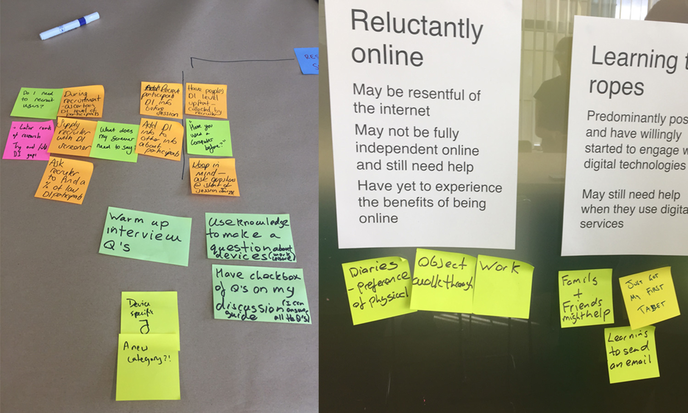
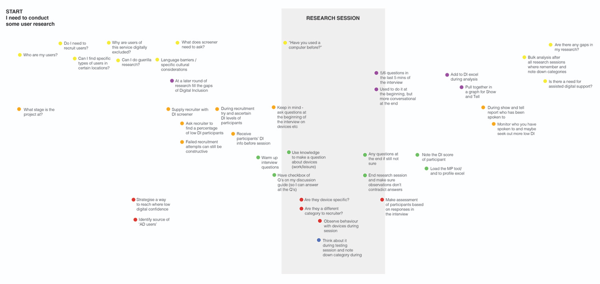
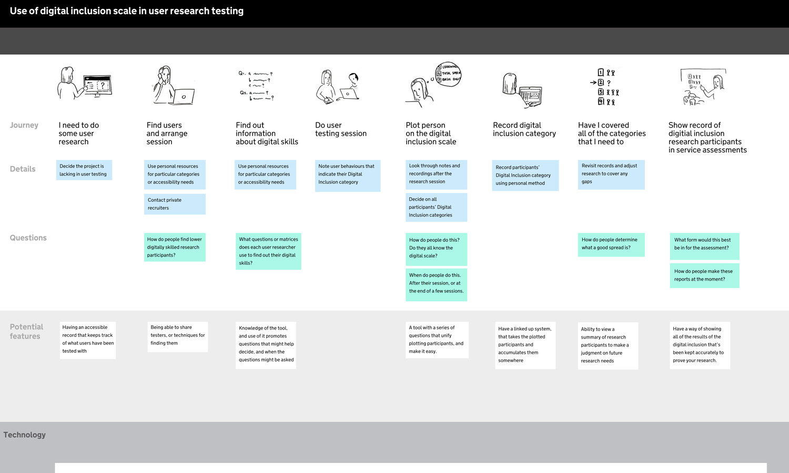
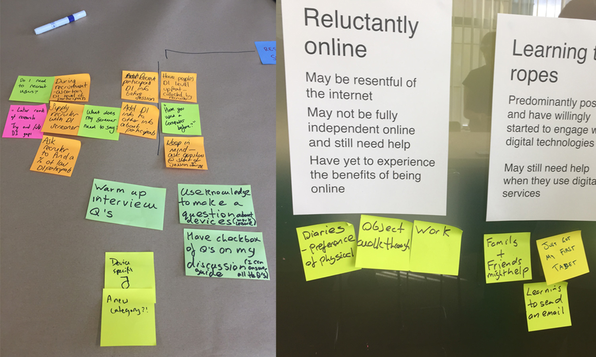
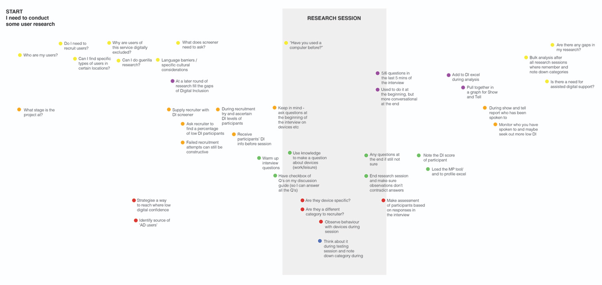
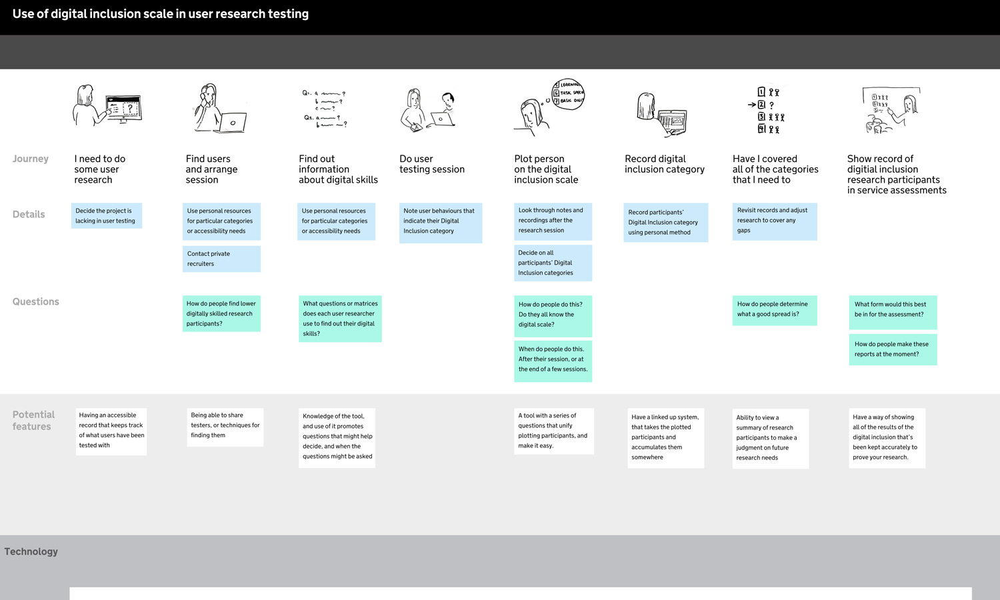

Mapping participants
HOME OFFICE DIGITAL
Creating services that are for everyone, they need to be designed for all people, all levels of digital skills, all levels of language. This means that at the Home Office the services are tested with as wide a variety of people as possible. To try make sure that we are actually doing this, GDS came up with the digital inclusions scale, categorising different personas that we can keep in mind when designing services. This digital inclusion categories contain categories such as ‘Never have, never will’ to describe someone who has never used the internet and is deeply mistrusting or unable physically etc. In theory by making sure that you have a service that has tested well with people from all the categories you would have a service that would work for everyone.
There was a need to try have more shared knowledge and uniformity about the digital categories, as well a way of having a way to record and view which projects were managing to test with which categories so a team was put together to create a mapping tool that researchers could use to capture and record their research participants categories.
When I joined the project a prototype had already been created; a series of questions that researchers could go through after their research session. The other designer and I initially worked on the functionality of what was already existing creating iterations of the prototype, working towards the most effective way for researchers to know how to use the tool, add their participants and how they might want to view that information, or make sense of it.
Following a growing sense that the core need for this service has not been fully understood, solidified after participating in ‘The problem to solve’ workshop, from Kate Tarling, we held a workshop to draw these things out. Realising that the need for the service didn’t come from the primary users, we began to separate out the need for the data that was being collected, and the needs of the person collecting the data, and started a discovery phase to unearth these more clearly.
Working closely with the user researchers, we identified the high level users and extracted high level user needs from interviews that helped us understand the problem we were solving. To collect a set of needs of the users interacting with whatever tool we were creating I held a workshop with two activities to understand how user researchers interact with digital inclusion information. The aims of the workshop was to get a good idea of the level of knowledge around digital inclusion data, and also to understand the timeline of how different people plan, find out and record digital inclusion categories of their participant. From this workshop we were able to collect another set of user needs and feel comfortable that moving into an alpha stage, we would have a framework from which to start designing prototypes around.
After a team workshop to create different design strands, from the most simple spreadsheet entry, to the more extreme, game based challenges, we are now in a phase of rapid prototyping and testing. I have looked at ways that people could draw out the digital inclusion category during a research session, have an easy reference point, and where they would then enter the participant data.

 




